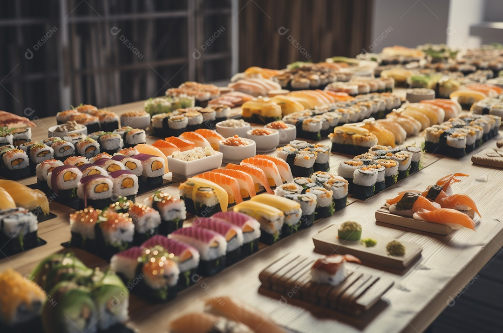

A culinária japonesa é uma celebração da natureza, onde cada prato reflete o respeito pelos ingredientes e pelas estações do ano. Conhecida por sua apresentação impecável e sabores sutis, a gastronomia do Japão vai muito além do sushi e do sashimi. Pratos como o tempurá, com sua crocância delicada, e o reconfortante ramen, com caldos profundos e aromáticos, mostram a diversidade dessa cozinha. O washoku, estilo culinário tradicional japonês, foi inclusive reconhecido como Patrimônio Cultural Imaterial da UNESCO, destacando sua importância cultural.

Para acompanhar essas delícias, os japoneses contam com bebidas como o sake, um licor de arroz que pode ser apreciado quente ou gelado, e o matchá, um chá verde vibrante usado em cerimônias seculares. Há também opções não alcoólicas, como o Calpis, uma bebida láctea levemente adocicada, e o Ramune, um refrigerante único com tampa de esfera. Cada refeição no Japão é uma experiência que envolve todos os sentidos, equilibrando sabor, textura e estética.
Enquanto a gastronomia japonesa encanta com sua delicadeza e precisão, a coreana surpreende com sua intensidade e vitalidade. Ambas, porém, compartilham um profundo respeito pelos ingredientes e pelas tradições, transformando cada refeição em uma celebração da vida. Seja na serenidade de um jantar japonês ou na animação de uma mesa coreana, essas cozinhas oferecem experiências inesquecíveis para todos os paladares.